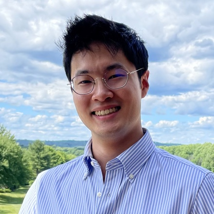

We build systems that
interactively reason
alongside humans
About
The Formal Methods and Reasoning Group (FoRG) focuses on
Automated Reasoning in Neurosymbolic AI and explores this at the intersection of humans and machines.
Fall 2026 recruiting: We look forward to recruiting Undergraduate and
MS students in the Fall.
Projects
STEP-Bench
STEP-Bench (Symbolic Temporal Exploratory Puzzle Benchmark) is a series of interactive
reasoning puzzles for studying causal reasoning, incorporating eye-tracking to monitor
how participants solve temporal puzzle tasks.
Manhattan Reasoning is a platform for teaching AI systems to reason about hardware design,
combining cloud-based FPGA access, sandbox environments, and open-source toolchains built
on technologies like Yosys and nextpnr — bringing hardware reasoning to everyone.
The Lattice Deduction Transformer (LDT) is a recurrent transformer that approximates
logically sound deduction by projecting its latent state through a lattice between
forward passes.
This work is a collaboration with Axiom Math.
TempoBench is a formal benchmark for evaluating counterfactual causal reasoning in large
language models. While frontier LLMs can simulate systems forward with high accuracy, their
performance drops sharply when asked to identify which inputs were necessary for a given
output — a gap with important implications for debugging and root cause analysis.
MaxPyLang is a Python package for programmatically generating and editing MaxMSP patches —
placing objects and building connections that would be tedious to create through the
visual interface alone.
Talks and visitors hosted by the group. All are welcome.
Access: Events are open to anyone with a Barnard or Columbia ID.
Coming from elsewhere? Email
msantolu@barnard.edu at least a day ahead
so we can arrange guest access.
Upcoming
Guest Lecture
A Hoare Logic for Continuous-Time Stochastic Processes
#
LeFrak Seminar Meeting Room (101A), LeFrak Center, Barnard Hall, Barnard College
Abstract
Continuous-time stochastic processes like Brownian motion model noise in the physical
world, from particles in a fluid to interest rates and stock prices. We have many tools
for reasoning about probabilistic programs, but it remains unclear how to apply them to
continuous-time stochastic processes. In this talk I will try to convince you that we can
reason about these processes the way we reason about programs: by writing them as ordinary
probabilistic programs with a small time step dt and taking dt to 0.
I will define a continuous semantics for pWhile-dt, a probabilistic imperative language
with a time step variable dt, by collecting the limit points of its standard
program semantics as dt approaches 0. I will present a Hoare logic over our
continuous semantics in which properties proved on the standard semantics for small
dt transfer to the continuous semantics. To demonstrate our logic, we will verify
properties of Brownian motion and geometric Brownian motion with loop invariants. Finally,
I will present a prototype implementation that applies off-the-shelf probabilistic program
analysis tools to reason about continuous-time stochastic processes.
This is joint work with Justin Hsu.
Speaker

Kei Imada is a fourth-year Ph.D. candidate in Computer Science at Cornell University,
advised by Justin Hsu. His research develops program
logics for continuous-time systems, proving temporal and probabilistic properties of
cyber-physical and stochastic systems as though they are programs. Before Cornell, he
was a software engineer at Pure Storage (now Everpure), and he received his B.A. from
Swarthmore College.
Interested in joining the group or collaborating? We'd love to hear from you —
prospective students (see our Fall 2026 recruiting note on the About page),
potential collaborators, and anyone curious about our work are welcome to reach out.
Prof. Mark Santolucito
Barnard College, Columbia University
Department of Computer Science